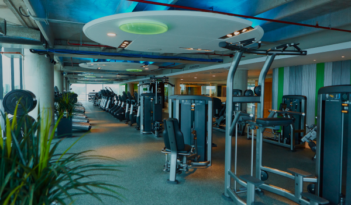

Introduccion:
El gimnasio es un lugar diseñado para realizar actividades físicas y ejercicios que ayudan a mejorar la salud y el estado físico. Los gimnasios ofrecen una variedad de equipos y espacios para trabajar diferentes grupos musculares, así como clases de fitness que se enfocan en diversas actividades.
Beneficios:
Mejora de la salud física: Hacer ejercicio regularmente ayuda a mantener un peso saludable, fortalecer los músculos y mejorar la salud cardiovascular.
Beneficios mentales: El ejercicio puede reducir el estrés, la ansiedad y la depresión, y mejorar el estado de ánimo y la autoestima.
Socialización: El gimnasio es un lugar donde se pueden conocer a otras personas que comparten intereses similares en fitness y bienestar.
Caracteristicas:
Los gimnasios cuentan con máquinas de pesas, equipos de cardio como cintas de correr, bicicletas, máquinas de remo y accesorios como pesas libres y colchonetas.
Zonas específicas: Pueden tener áreas específicas para entrenamiento de fuerza, cardio y estiramientos, además de clases grupales.
Entrenador personal (Personal trainer): Muchos gimnasios ofrecen la opción de contar con entrenadores personales que pueden ayudar a crear un plan de entrenamiento adaptado a las necesidades individuales.
Tipos de ejercicios:
Entrenamiento de fuerza: Incluye el uso de pesas y máquinas para desarrollar la fuerza muscular.
Ejercicios cardiovasculares: Actividades como correr, nadar o andar en bicicleta que aumentan la frecuencia cardíaca y mejoran la resistencia.
Ejercicios de flexibilidad: Involucran estiramientos y movimientos que mejoran la movilidad y reducen el riesgo de lesiones.